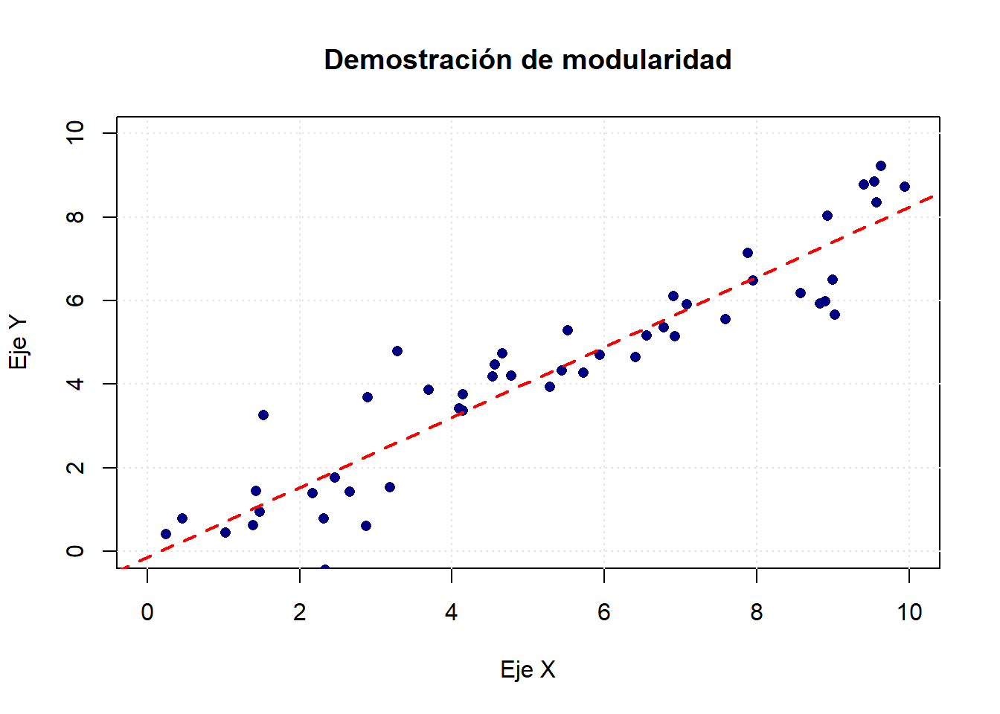
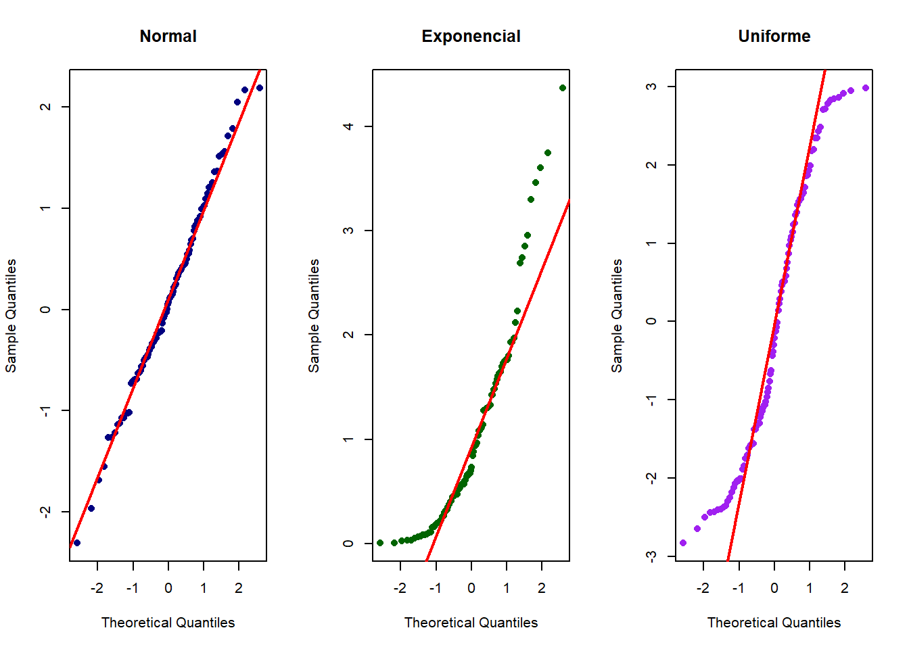
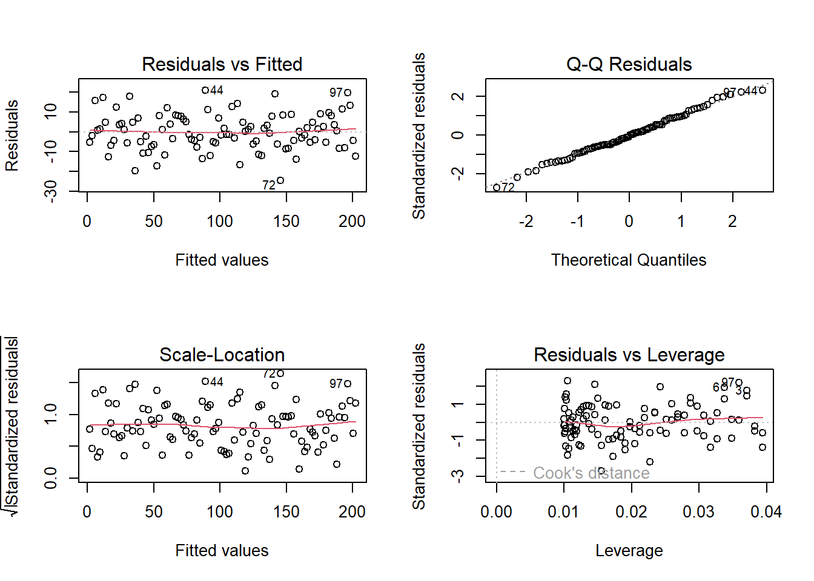
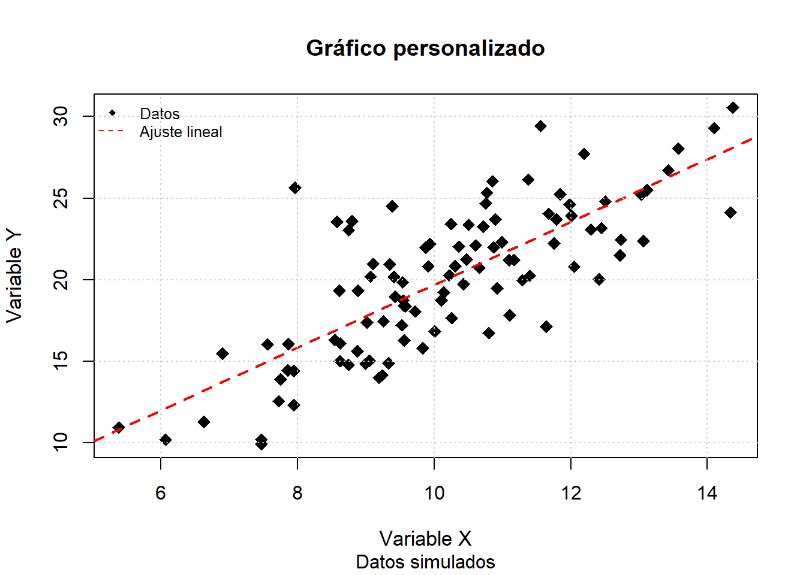

La representación gráfica de la información constituye un componente indispensable para la comprensión, la comunicación y la validación de resultados estadísticos. El sistema gráfico base de R ofrece un conjunto de herramientas versátiles que permiten construir visualizaciones de alta calidad siguiendo un enfoque incremental, en el cual cada elemento puede añadirse o modificarse de forma independiente (Murrell, 2018). A continuación se describe, de manera detallada y pedagógica, la arquitectura de este sistema y las funciones esenciales para el análisis exploratorio y la comprobación de supuestos en la estadística clásica.
El propósito principal de la visualización es facilitar la detección de patrones, tendencias y anomalías que resultan difíciles de advertir mediante inspección numérica (Cleveland, 1993). Además, las gráficas permiten evaluar supuestos tales como normalidad, homocedasticidad y linealidad, que son cruciales para la validez de métodos paramétricos como la regresión lineal y el ANOVA (Venables & Ripley, 2002). Bajo esta perspectiva, la elaboración de gráficos debe regirse por principios de claridad, precisión y economía visual (Tufte, 2001).
13.1 Arquitectura del sistema gráfico base
El sistema gráfico base de R se sustenta en tres principios operativos:
Modularidad: cada elemento (ejes, marcas, títulos, objetos geométricos) puede añadirse o modificarse sin rehacer el gráfico desde cero.
Jerarquía: los componentes se dibujan en capas sucesivas sobre un “lienzo” inicial.
Persistencia: las modificaciones se aplican sobre el dispositivo gráfico activo hasta que este se cierra o se restablecen los parámetros originales (Murrell, 2018).
# Ejemplo ilustrativo de construcción modularplot(NULL, # Lienzo vacíoxlim =c(0, 10), ylim =c(0, 10),xlab ="Eje X", ylab ="Eje Y",main ="Demostración de modularidad")grid(col ="gray90") # Capa 1: cuadrícula# Capa 2: puntos de datos simuladosset.seed(123)x <-runif(50, 0, 10)y <-0.8* x +rnorm(50, 0, 1)points(x, y, pch =16, col ="navy")# Capa 3: línea de tendenciaabline(lm(y ~ x), col ="red", lwd =2, lty =2)

13.2 Funciones gráficas básicas de R
El sistema gráfico base de R constituye una de las herramientas más accesibles y versátiles para la visualización de datos en estadística clásica. Estas funciones permiten crear gráficos de manera rápida y flexible, facilitando tanto la exploración inicial de los datos como la comprobación de supuestos estadísticos fundamentales. El enfoque de R base se basa en la construcción secuencial de gráficos, donde cada elemento puede ser añadido o modificado mediante argumentos y funciones auxiliares, lo que resulta especialmente útil en el análisis exploratorio y diagnóstico (Murrell, 2018; Venables & Ripley, 2002).
Entre las funciones más utilizadas se encuentran:
plot(): función genérica para gráficos de dispersión, líneas y otros tipos de visualizaciones.
hist(): para la creación de histogramas que muestran la distribución de variables cuantitativas.
boxplot(): para diagramas de caja que resumen la dispersión y los valores atípicos.
barplot(): para gráficos de barras de frecuencias o proporciones.
qqnorm() y qqline(): para gráficos Q-Q que evalúan la normalidad de los datos.
pairs(): para matrices de gráficos de dispersión entre varias variables.
Estas funciones son la base para la mayoría de los análisis gráficos en estadística clásica, permitiendo una rápida inspección visual de los datos y la validación de supuestos (Venables & Ripley, 2002).
13.3 Funciones esenciales para la exploración de datos
La exploración visual de los datos es una etapa fundamental en cualquier análisis estadístico, ya que permite identificar patrones, tendencias, anomalías y posibles errores en los datos antes de aplicar modelos formales. El sistema gráfico base de R proporciona funciones versátiles y personalizables para la creación de gráficos exploratorios, facilitando la comprensión y la comunicación de los resultados (Venables & Ripley, 2002; Murrell, 2018).
13.3.1 Histogramas
El histograma es una herramienta gráfica que permite representar la distribución de una variable numérica, facilitando la identificación de asimetrías, curtosis, valores atípicos y posibles multimodalidades (Cleveland, 1993). En R, la función principal para crear histogramas es hist().
Sintaxis general:
hist(x, breaks ="Sturges", freq =TRUE, col =NULL, border =NULL, main =NULL, xlab =NULL, ylab =NULL, ...)
Explicación de los argumentos principales:
x: Vector numérico con los datos a graficar.
breaks: Define el número de intervalos (bins) o el método para calcularlos. Puede ser un número, un vector de puntos de corte, o un método como “Sturges”, “Scott”, “FD”.
freq: Si es TRUE, el eje Y muestra frecuencias absolutas; si es FALSE, muestra densidades.
col: Color de las barras.
border: Color del borde de las barras.
main: Título principal del gráfico.
xlab, ylab: Etiquetas de los ejes X e Y.
...: Otros argumentos gráficos adicionales.
Ejemplo:
# Simulación de datos: calificaciones de 200 estudiantesset.seed(123)notas <-rnorm(200, mean =70, sd =10)# Creación de un histograma personalizadohist(notas,breaks =15, # Número de intervalos (bins)freq =TRUE, # Mostrar frecuencias absolutas en el eje Ycol ="lightblue", # Color de las barrasborder ="darkblue", # Color del borde de las barrasmain ="Histograma de calificaciones", # Título principalxlab ="Puntaje", # Etiqueta del eje Xylab ="Frecuencia") # Etiqueta del eje Y
La elección del número de intervalos (breaks) es crucial para evitar interpretaciones erróneas: intervalos muy amplios pueden ocultar detalles importantes, mientras que intervalos muy estrechos pueden generar ruido visual (Venables & Ripley, 2002).
13.3.2 Diagramas de caja (boxplots)
El diagrama de caja, o boxplot, es una herramienta gráfica que resume la dispersión, la mediana y la presencia de valores atípicos en una o varias muestras. Es especialmente útil para comparar grupos y detectar asimetrías (Tukey, 1977).
Sintaxis general:
boxplot(formula, data =NULL, main =NULL, xlab =NULL, ylab =NULL, col =NULL, border =NULL, notch =FALSE, outline =TRUE, ...)
formula: Expresión del tipo y ~ grupo para comparar grupos.
data: Data frame donde buscar las variables.
main, xlab, ylab: Títulos y etiquetas.
col: Colores de las cajas.
border: Color del borde de las cajas.
notch: Si es TRUE, añade una muesca para comparar medianas.
outline: Si es TRUE, muestra valores atípicos.
...: Otros argumentos gráficos.
Ejemplo:
# Simulación de datos para dos gruposset.seed(123)grupo <-factor(rep(c("Control", "Tratamiento"), each =100))valores <-c(rnorm(100, 70, 8), rnorm(100, 75, 10))# Creación de un boxplot personalizadoboxplot(valores ~ grupo,main ="Comparación entre Grupos",xlab ="Grupo",ylab ="Valores",col =c("lightgreen", "lightcoral"), # Colores para cada grupoborder ="darkgray", # Color del bordenotch =TRUE, # Muesca para comparar medianasoutline =TRUE) # Mostrar valores atípicos
La muesca en el boxplot ayuda a comparar visualmente las medianas: si las muescas no se superponen, existe evidencia de diferencia significativa entre los grupos (Murrell, 2018).
13.3.3 Gráficos de dispersión
El gráfico de dispersión es fundamental para analizar la relación entre dos variables cuantitativas, permitiendo identificar tendencias lineales, no lineales, agrupamientos y valores atípicos (Cleveland, 1993).
Sintaxis general:
plot(x, y, type ="p", main =NULL, sub =NULL, xlab =NULL, ylab =NULL, pch =1, col =NULL, cex =1, ...)
Explicación de los argumentos principales:
x, y: Vectores numéricos de igual longitud.
type: Tipo de gráfico (“p” para puntos, “l” para líneas, “b” para ambos).
main, sub: Título principal y subtítulo.
xlab, ylab: Etiquetas de los ejes.
pch: Tipo de símbolo para los puntos (1: círculo, 16: círculo sólido, 17: triángulo, etc.).
col: Color de los puntos.
cex: Tamaño relativo de los puntos.
...: Otros argumentos gráficos.
Ejemplo:
# Simulación de datos correlacionadosset.seed(123)x <-rnorm(100, mean =10, sd =2)y <-2* x +rnorm(100, 0, 3)# Gráfico de dispersión personalizadoplot(x, y,type ="p", # Tipo de gráfico: puntosmain ="Relación entre X e Y",sub ="Datos simulados",xlab ="Variable X",ylab ="Variable Y",pch =16, # Círculo sólidocol ="navy", # Color de los puntoscex =1.2) # Tamaño de los puntos# Añadir línea de regresión linealabline(lm(y ~ x), col ="red", lwd =2, lty =2)
La adición de la línea de regresión ayuda a identificar la dirección y fuerza de la relación entre las variables (Venables & Ripley, 2002).
13.3.4 Gráficos de líneas
Los gráficos de líneas son ideales para representar la evolución de una variable a lo largo del tiempo o en función de un orden secuencial, permitiendo detectar tendencias, ciclos y cambios abruptos (Murrell, 2018).
plot(x, y, type ="l", main =NULL, xlab =NULL, ylab =NULL, col =NULL, lwd =1, ...)
type = "l": Dibuja una línea.
lwd: Grosor de la línea.
Ejemplo:
# Simulación de una serie temporalset.seed(123)tiempo <-1:50medidas <-cumsum(rnorm(50))# Gráfico de líneasplot(tiempo, medidas,type ="l", # Tipo de gráfico: líneamain ="Serie temporal simulada",xlab ="Tiempo",ylab ="Medida",col ="darkred",lwd =2) # Grosor de la línea# Añadir puntos sobre la línea para enfatizar cada observaciónpoints(tiempo, medidas, pch =16, col ="black")
La combinación de líneas y puntos facilita la identificación de valores individuales y la tendencia global de la serie.
13.4 Visualización para la comprobación de supuestos estadísticos
La validación gráfica de los supuestos estadísticos es un paso esencial para garantizar la validez de los análisis en la estadística clásica. Antes de aplicar pruebas como ANOVA o modelos de regresión lineal, es fundamental verificar visualmente la normalidad, la homocedasticidad y la linealidad de los datos. El sistema gráfico base de R proporciona herramientas específicas para evaluar estos supuestos de manera eficiente y pedagógica (Venables & Ripley, 2002; Murrell, 2018).
13.4.1 Gráficos Q-Q: Evaluación visual de la normalidad
El gráfico Q-Q (quantile-quantile) es una herramienta visual poderosa para comparar la distribución de los datos observados con una distribución teórica, generalmente la normal. Si los puntos del gráfico se alinean sobre la diagonal, se puede inferir que los datos siguen la distribución de referencia. Las desviaciones sistemáticas de esta línea indican alejamientos de la normalidad, lo que puede requerir transformaciones de los datos o el uso de métodos no paramétricos (Cleveland, 1993).
Sintaxis básica y explicación:
qqnorm(): Genera el gráfico Q-Q de los datos frente a la normal.
qqline(): Añade la línea de referencia teórica.
Ejemplo:
# Simulación de tres conjuntos de datos con diferentes distribucionesset.seed(123)# Datos con distribución normaldatos_normales <-rnorm(100, mean =0, sd =1) # Datos con distribución exponencial (asimétrica)datos_asimetricos <-rexp(100, rate =1) # Datos con distribución uniformedatos_uniformes <-runif(100, min =-3, max =3) # Configuración de la ventana gráfica para mostrar tres gráficos en una filapar(mfrow =c(1, 3))# Gráfico Q-Q para datos normalesqqnorm(datos_normales,main ="Normal",pch =16, # Círculo sólidocol ="navy") # Color de los puntosqqline(datos_normales, col ="red", lwd =2) # Línea de referencia# Gráfico Q-Q para datos asimétricosqqnorm(datos_asimetricos,main ="Exponencial",pch =16,col ="darkgreen")qqline(datos_asimetricos, col ="red", lwd =2)# Gráfico Q-Q para datos uniformesqqnorm(datos_uniformes,main ="Uniforme",pch =16,col ="purple")qqline(datos_uniformes, col ="red", lwd =2)

# Restaurar la configuración original de la ventana gráficapar(mfrow =c(1, 1))
La interpretación de estos gráficos se basa en el patrón que forman los puntos en relación con la línea de referencia. Según Venables & Ripley (2002), las desviaciones más comunes incluyen:
Colas pesadas: cuando los extremos se alejan de la línea.
Asimetría: cuando se forma un patrón curvilíneo.
Bimodalidad: cuando aparece un patrón en forma de S.
13.4.2 Gráficos de diagnóstico para modelos de regresión
La regresión lineal clásica asume linealidad, normalidad de los residuos, homocedasticidad (varianza constante) e independencia. R facilita la evaluación simultánea de estos supuestos mediante gráficos de diagnóstico automáticos generados con la función plot() aplicada a objetos de clase lm (Murrell, 2018).
Ejemplo:
# Simulación de datos para regresión linealset.seed(123)x <-seq(1, 100) # Variable predictoray <-2* x +rnorm(100, 0, 10) # Variable respuesta con error normaldatos <-data.frame(x = x, y = y) # Crear data frame# Ajuste del modelo de regresión linealmodelo <-lm(y ~ x, data = datos) # Ajustar modelo# Configuración de la ventana gráfica para mostrar cuatro gráficospar(mfrow =c(2, 2))plot(modelo) # Generar gráficos diagnósticos

par(mfrow =c(1, 1)) # Restaurar configuración
Descripción e interpretación de los gráficos generados:
Residuos vs valores ajustados: Permite evaluar la linealidad y la homogeneidad de la varianza. Un patrón aleatorio indica que se cumplen los supuestos; patrones sistemáticos sugieren problemas de especificación del modelo.
Q-Q de residuos: Evalúa la normalidad de los residuos. Desviaciones de la línea diagonal indican que los residuos no son normales.
Scale-Location (raíz cuadrada de los residuos estandarizados vs valores ajustados): Permite examinar la homogeneidad de la varianza. Una banda horizontal indica homogeneidad de la varianza.
Residuos vs leverage: Identifica observaciones influyentes. Puntos alejados o con gran leverage pueden indicar outliers o casos influyentes que afectan el ajuste del modelo (Murrell, 2018).
13.5 Personalización de gráficos en R base
La personalización de gráficos es un aspecto fundamental para lograr visualizaciones claras, informativas y estéticamente agradables. En el sistema gráfico base de R, la personalización se realiza mediante la modificación de los argumentos de las funciones gráficas principales y la incorporación de elementos adicionales a través de funciones auxiliares. Esta flexibilidad permite adaptar cada gráfico a las necesidades específicas del análisis y a los estándares de comunicación científica (Murrell, 2018).
13.5.1Argumentos y funciones clave para la personalizaciónA continuación se describen los argumentos y funciones más relevantes para la personalización de gráficos en R base:
A continuación se describen los argumentos y funciones más relevantes para la personalización de gráficos en R base:
main, sub, xlab, ylab: Permiten definir el título principal, subtítulo y las etiquetas de los ejes X e Y, respectivamente, facilitando la interpretación del gráfico.
col, border, pch, lty, lwd: Controlan el color de los elementos, el color del borde, el tipo de símbolo para los puntos, el tipo de línea y el grosor de las líneas, respectivamente.
cex, cex.axis, cex.lab, cex.main: Ajustan el tamaño relativo de los símbolos, los textos de los ejes, las etiquetas y el título principal.
legend(): Añade leyendas explicativas en posiciones específicas del gráfico, mejorando la comprensión de los elementos representados.
text(): Permite agregar texto en coordenadas específicas, útil para destacar valores o anotar observaciones relevantes.
abline(): Añade líneas horizontales, verticales o de regresión, facilitando la identificación de tendencias o referencias.
grid(): Incorpora una cuadrícula de fondo, lo que ayuda a la lectura precisa de las coordenadas y la comparación visual de los datos.
13.5.2 Ejemplo integral
A continuación se presenta un ejemplo completo que ilustra cómo combinar estos argumentos y funciones para lograr una visualización profesional y clara:
# Simulación de datos para el ejemploset.seed(123)x <-rnorm(100, mean =10, sd =2)y <-2* x +rnorm(100, 0, 3)# Gráfico de dispersión personalizadoplot(x, y,main ="Gráfico personalizado", # Título principalsub ="Datos simulados", # Subtítuloxlab ="Variable X", # Etiqueta eje Xylab ="Variable Y", # Etiqueta eje Ycol ="black", # Color de los puntospch =18, # Símbolo: rombo sólidocex =1.5, # Tamaño de los puntoscex.main =1.2, # Tamaño del títulocex.lab =1.1) # Tamaño de las etiquetas# Añadir línea de regresión linealabline(lm(y ~ x), col ="red", lwd =2, lty =2) # Línea de tendencia# Añadir leyenda explicativalegend("topleft",legend =c("Datos", "Ajuste lineal"),pch =c(18, NA), # Símbolo para los datoslty =c(NA, 2), # Línea discontinua para el ajustecol =c("black", "red"),bty ="n", # Sin borde en la leyendacex =0.8) # Tamaño de la leyenda# Añadir cuadrícula de fondogrid(col ="gray80", lty ="dotted") # Cuadrícula con líneas punteadas grises

La personalización adecuada de los gráficos no solo mejora la estética, sino que también facilita la interpretación y la comunicación de los resultados, permitiendo resaltar los aspectos más relevantes del análisis (Murrell, 2018; Venables & Ripley, 2002).